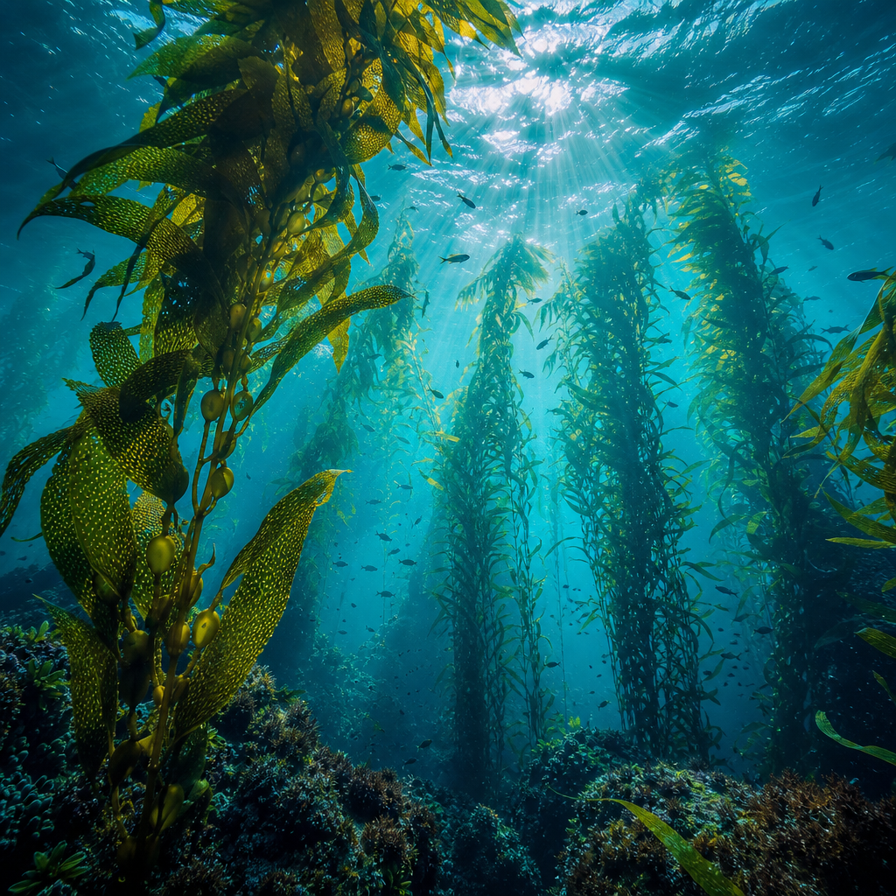
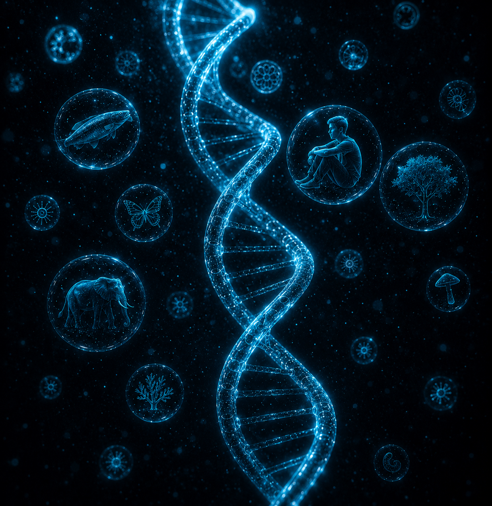
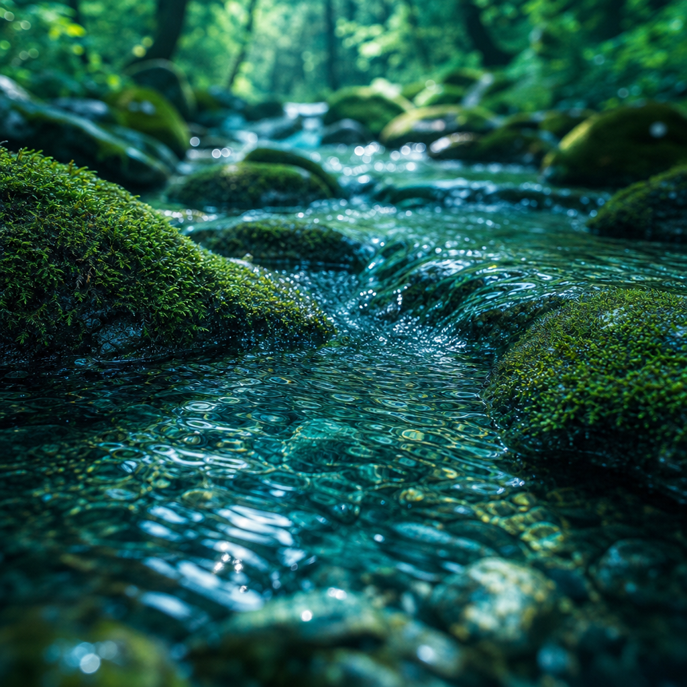
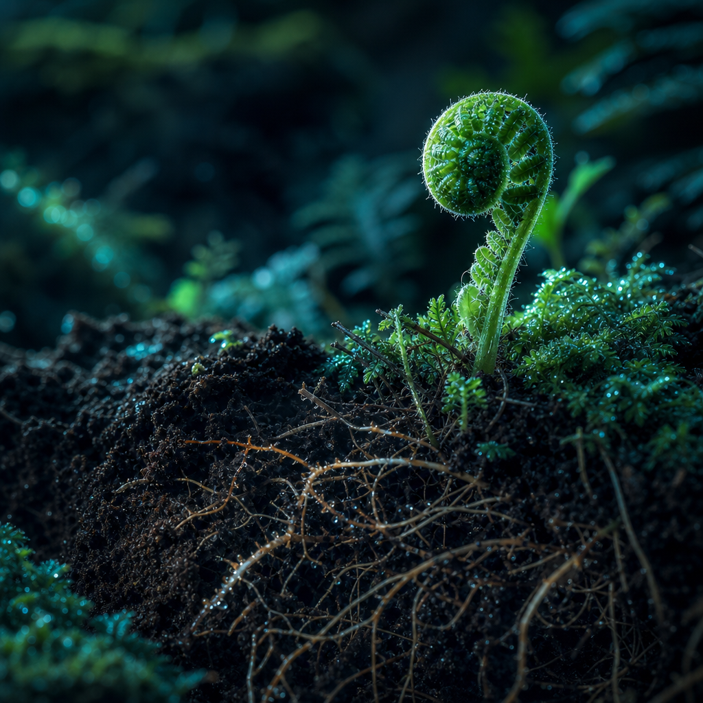
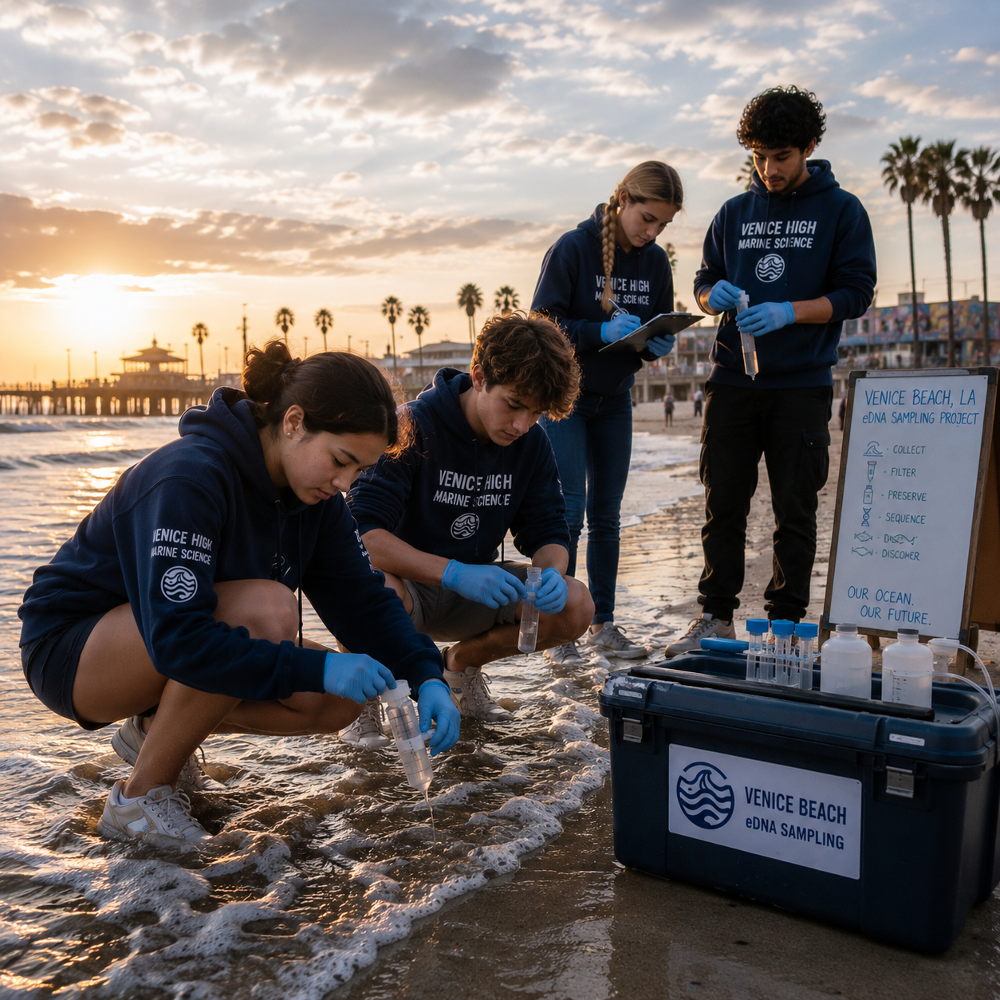
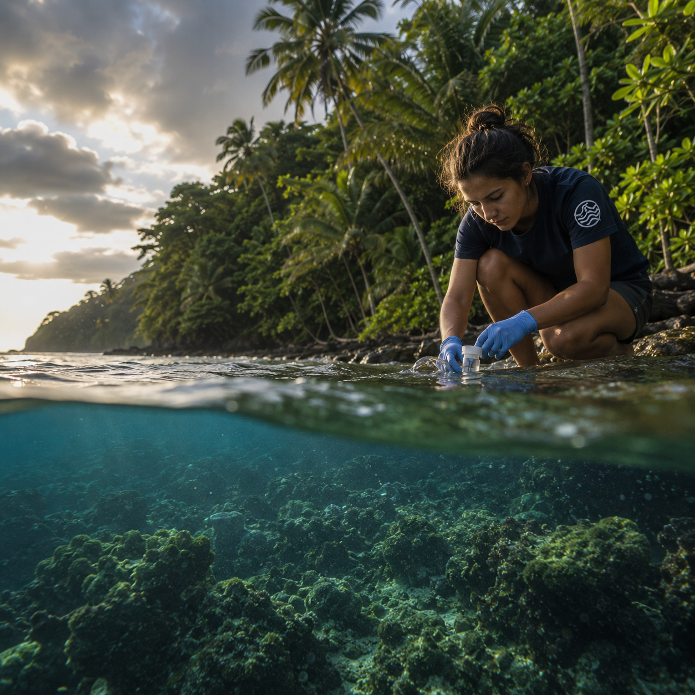
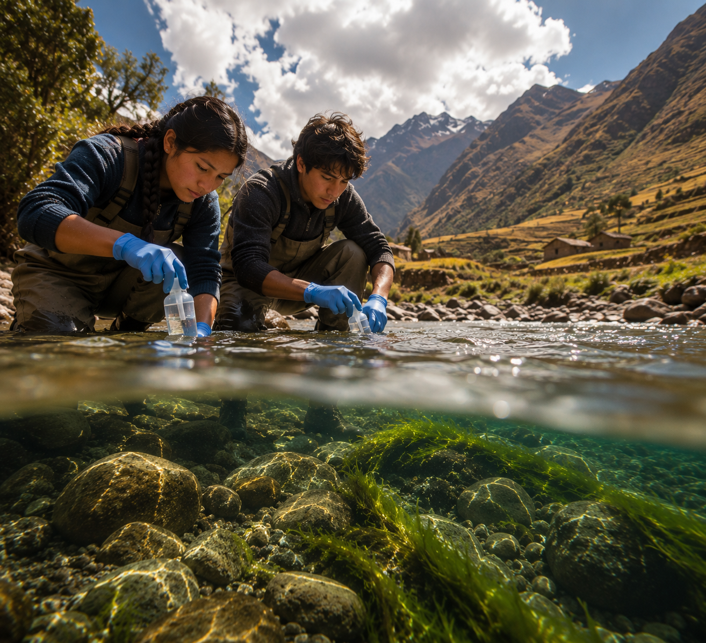
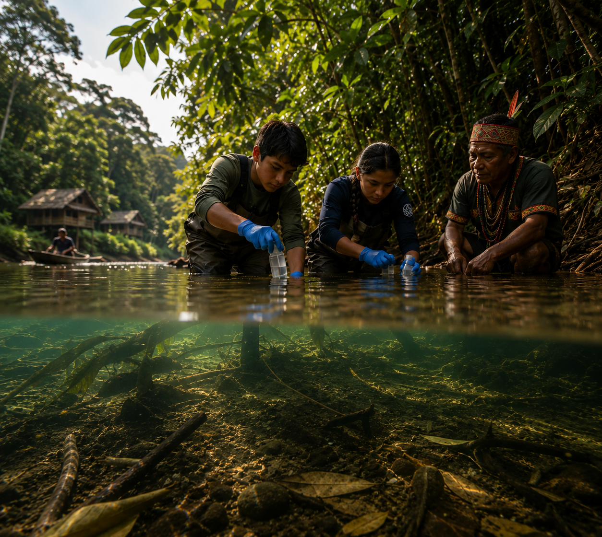

Oceans & coasts
In tide pools, kelp forests, and open water, a single liter of seawater can carry the DNA of fish, invertebrates, and microbes that students never have to disturb.
Environmental DNA education
Together they form the World Genome, the collective genetic record of life on Earth. Much of it remains unread, and biodiversity is disappearing before we ever get the chance to listen. We are training the next generation to read it.
The World Genome
Every cell of every living thing holds a genome, a written record of how life solves the problem of being alive. Multiply that across millions of species and you have the World Genome: the single, collective genetic memory of our planet.
Most of those pages have never been opened. As habitats shrink and species vanish, we are losing entire chapters of genetic information before they are ever discovered, sequenced, or understood. World Genome Academy exists to change who gets to read this library, and how soon.
What environmental DNA reveals
Where students work
From the open ocean to the soil beneath a city park, students collect and sequence the genetic traces that living things leave behind, building a record of life across the water cycle.

In tide pools, kelp forests, and open water, a single liter of seawater can carry the DNA of fish, invertebrates, and microbes that students never have to disturb.

Rivers, streams, and wetlands gather DNA from everything upstream. Students sample these living corridors to map amphibians, fish, and the health of the watershed.

A handful of forest soil holds roots, fungi, and the invisible web that holds an ecosystem together. Students read it to reveal the biodiversity hidden underfoot.
Our mission
We turn students into real scientists and active stewards of the living world.
By pairing hands-on fieldwork with portable DNA sequencing and place-based education, we make genomic literacy accessible to any classroom, anywhere, while contributing data to genuine research and conservation.
Pilot programs
Our first pilots are putting sequencers into the hands of students across continents. Each project explores its own backyard, and every result joins a shared picture of life on Earth.

Students explore the biodiversity of a coastline shaped by millions of people, imacted by recent wildfires

Jungle rivers meeting the Pacific make this one of the most biodiverse classrooms on the planet for young researchers.

High-altitude rivers carry the genetic signatures of an ecosystem found nowhere else, sampled by Andean students.

In partnership with Indigenous communities, environmental DNA uncovers the extraordinary biodiversity hidden within the Peruvian Amazon.
More teams are joining all the time, extending the network into new corners of the globe. Each cohort adds its own landscapes and species to the record, another vantage point on a changing planet that no single site could offer alone. Sample by sample, the World Genome Atlas keeps growing — and the fuller it becomes, the more clearly it reads.
Join the work
Educators, students, researchers, and institutional partners are all part of reading the living library of Earth. Find your path in.